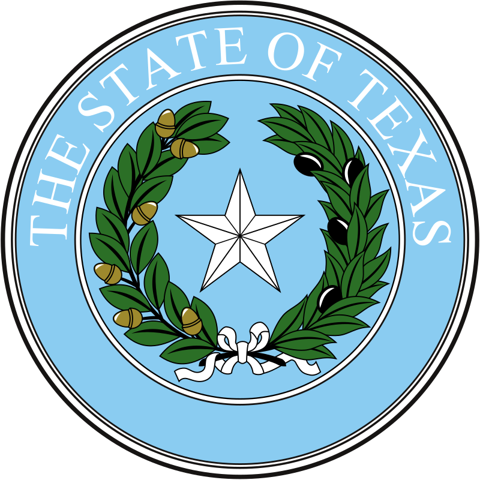

К середине 1830-х гг. диктатура и беззаконие в Мексике привели к тому, что государство оказалось на грани распада: территории Техаса и Юкатана выразили — согласно конституционному праву — желание отделиться. В 1835 году президент Мексики генерал Антонио Лопес де Санта-Анна предложил новую конституцию,
согласно которой отменялось рабство, бывшее нормой среди американских переселенцев. Кроме того он усилил давление на американцев, требуя разоружения и принудительного выдворения
нелегальных иммигрантов из пограничных штатов США и отдачи их земель. Эта политика мексиканского правительства вызывала недовольство среди жителей Техаса, и послужила поводом к войне за независимость.
2 октября 1835 года произошло столкновение техасцев с отрядом мексиканской кавалерии близ города Гонзалес, что привело к началу военных действий. 28 октября 1835 года в битве при Консепсьоне 90 техасцев победили 450 мексиканцев. 2 марта 1836 года на Собрании представителей американских переселенцев была подписана декларация о независимости
от Мексики. В ответ были посланы мексиканские войска, в битве за крепость Аламо в Сан-Антонио почти полностью уничтожившие малочисленный техасский гарнизон после тринадцатидневной осады.
Следом, 27 марта 1836 года по приказу Лопеса де Санта-Анны мексиканцы казнили Джеймса Фэннина и около 400 техасцев в Голиаде. Эти поражения, в свою очередь, вдохновили техасцев на создание армии, которая под руководством Сэма Хьюстона выиграла 21 апреля 1836 года определяющее сражение у Сан-Хасинто (Лопес де Санта-Анна был взят в плен).
14 мая 1836 года официальные представители Техаса и генерал Санта-Анна подписали договор о независимости в городе Веласко[en]. Однако правительство Мексики не ратифицировало этот договор, оставляя вопрос о независимости от Мексики открытым (при этом западная часть современного Техаса продолжала иметь неясный юридический статус). В конце 1836 года была принята конституция (подтверждающая право рабовладения), и Техас

Техас граничит со штатами Нью-Мексико (на западе), Оклахома (на севере), Луизиана (на востоке) и Арканзас (на северо-востоке). Юго-западная граница Техаса проходит по реке Рио-Гранде, которая разделяет США и Мексику. На юго-востоке Техас омывается Мексиканским заливом.
Восточная и южная часть Техаса располагаются на Примексиканской низменности (побережье Мексиканского залива); повышаясь
на западе она переходит в плато Эдуардc (до 835 м) и Льяно-Эстакадо (до 1200 м). На крайнем западе начинаются отроги Скалистых
гор (высотой до 2665 м).